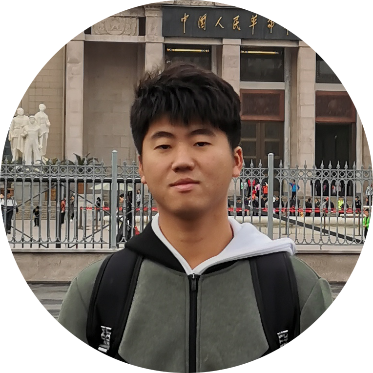
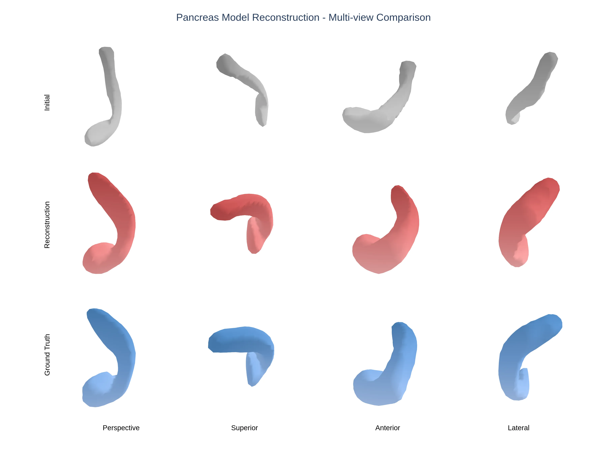
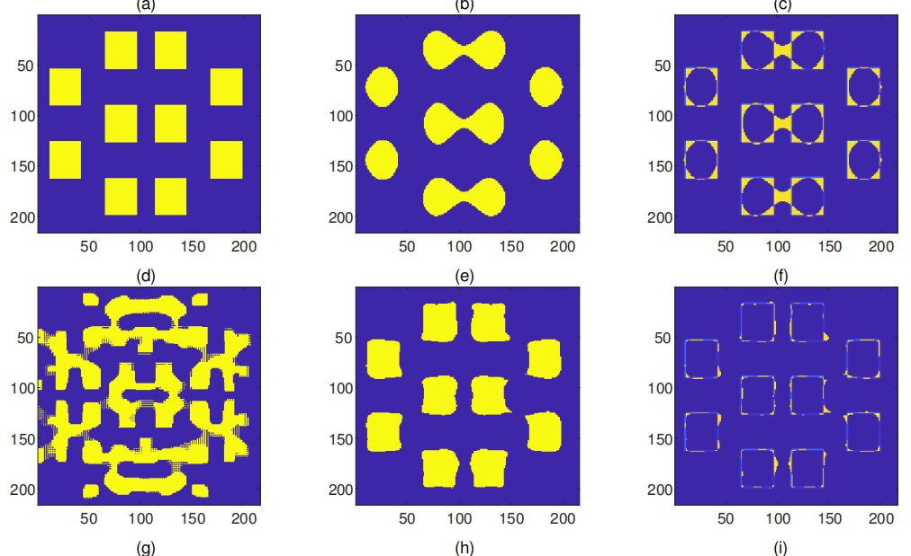

|
Postdoctoral Fellow School of Engineering Westlake University Contact: haibo.liu.research@gmail.com Office: Google Scholar | Github |
 |
Biography
I am a postdoctoral fellow in the School of Engineering at Westlake University. Prior to Westlake, I obtained my Ph.D. degree from Department of Mathematical Sciences at Tsinghua University supervised by Associate Prof. Junqing Chen. I obtained my Bachelor's degree with honors in Mathematics at Lanzhou University.
My research bridges 3D vision and physics-based modeling, focusing on inverse problems. I develop computational methods that integrate physical constraints into vision algorithms to enhance reconstruction accuracy. This includes work on inverse scattering problems, shape optimization, physics-informed computational imaging, and combining deep learning with physical models. My aim is to create more robust and physically accurate solutions for complex 3D vision challenges.
I am honored to have received the Award.
News
- [06/2024] Our paper LatentISP is accepted by Inverse Problems!
Selected Publications
|  |
Implicit Neural Shape Optimization for 3D High-Contrast Electrical Impedance Tomography
We present a novel implicit neural shape optimization framework for 3D high-contrast Electrical Impedance Tomography (EIT),
|

|
Solving inverse obstacle scattering problem with latent surface representations
We propose a novel iterative numerical method to solve the three-dimensional inverse obstacle scattering problem of recovering the shape of an obstacle from far-field measurements.
|
 |
An Alternating Direction Method of Multipliers for Inverse Lithography Problem
We propose an alternating direction method of multipliers (ADMM) to solve an optimization problem stemming from inverse lithography.
|
Other Publications
Selected Honors & Awards
- The 9th National College Math Competition National Second Prize China 2018
Professional Services
- Coorganizer:“0-1 Seminar”, Tsinghua University.
Teaching Assistant
- Fall 2020: Probability theory and mathematical statistics
- Spring 2020: Calculus
- SpriFallng 2019: Advanced Numerical Analysis